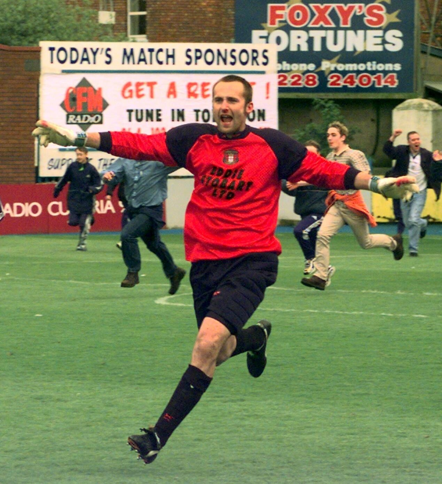
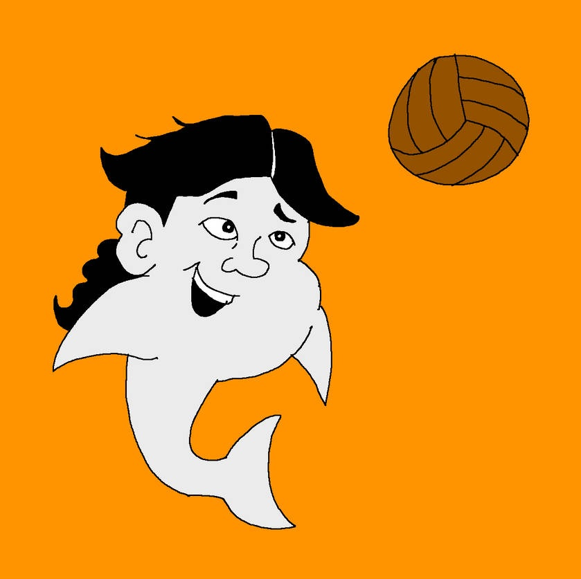
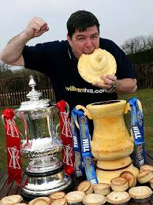
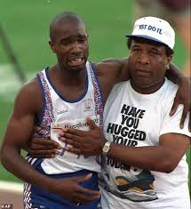
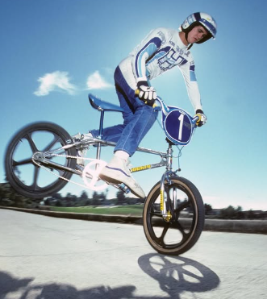
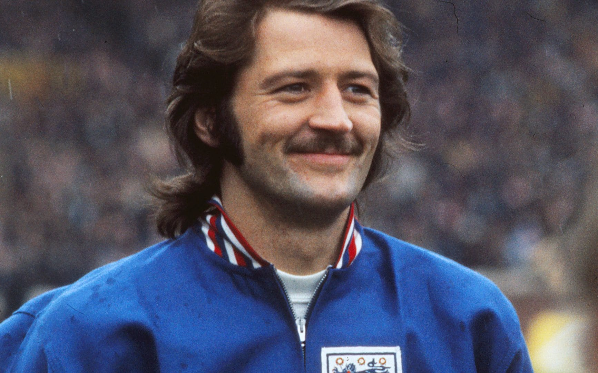
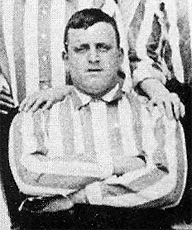
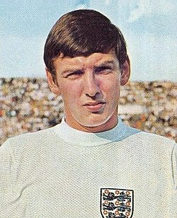
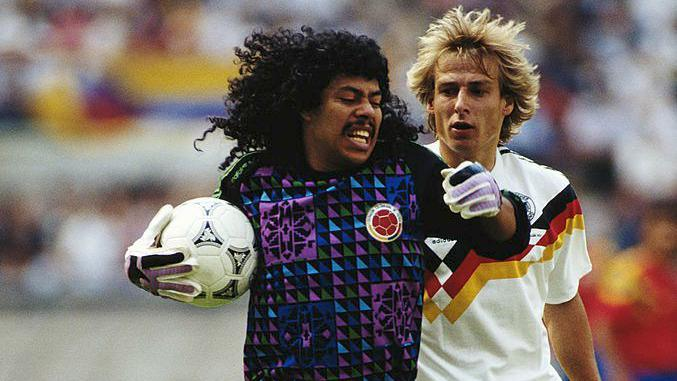

Jimmy Glass
The goalkeeper who scored to save Carlisle United from relegation
Billy the Fish
The star goalkeeper for the perpetually struggling AFC Fulchester, a fictional football team that never seems to win a match without Billy's extraordinary interventions.
Mighty Micky Quinn
Michael Thomas Quinn was a Welsh former professional footballer who played as a striker from 1979 to 1996.
Derek Redmond
Strength is measured in pounds. Speed is measured in seconds. Courage? You can't measure courage.
Bob Haro
Bob Haro, the man who invented freestyle BMX, became a legend by changing the world of cycling forever. We salute you sir.
Frank Worthington
Frank Worthington was an English footballer who played as a forward from 1967 to 1987. Known for his flamboyant style both on and off the pitch, Worthington was a gifted dribbler and a prolific goal scorer, earning him the nickname "The King of the Dribble."
William Foulke
William Henry "Fatty" Foulke (12 April 1874 – 1 May 1916) was an English professional goalkeeper who remains a legendary figure not just for his ability, but for his colossal size and highly eccentric behaviour.
Martin Peters: The Ghost of '66
Martin Stanford Peters MBE (8 November 1943 – 21 December 2019) was an English footballer and manager. He played as a midfielder from 1961 to 1981, most notably for West Ham United, Tottenham Hotspur, and Norwich City. Peters was a key member of the England team that won the 1966 FIFA World Cup, scoring in the final against West Germany.
René Higuita
René Higuita is a Colombian former professional footballer who played as a goalkeeper. He is widely regarded as one of the most eccentric and flamboyant goalkeepers in the history of the sport, known for his adventurous playing style and his ability to score goals.
